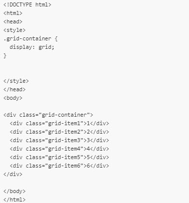

Que es CSS Grid
CSS Grid es un modelo de maquetación CSS en base a una rejilla y contienen una colección de líneas horizontales (filas) y verticales (columnas), que cuenta con el espaciado (o gutter) entre cada una de ellas, CSS Grid busca que los cambios de maquetación se realicen sin la necesidad de hacer mayores ajustes de estructura en HTML y con la posibilidad de definir mejor las filas y columnas a utilizar dentro del diseño..Ejemplo de CSS Grid
Rejilla, columnas y filas
Con CSS grid layout, se trabaja con filas y columnas para crear una cuadrícula, en la cual se colocan y distribuyen los distintos elementos. El usuario es quien decide el tamaño de las filas y las columnas, añadiendo las preferencias al contenedor.